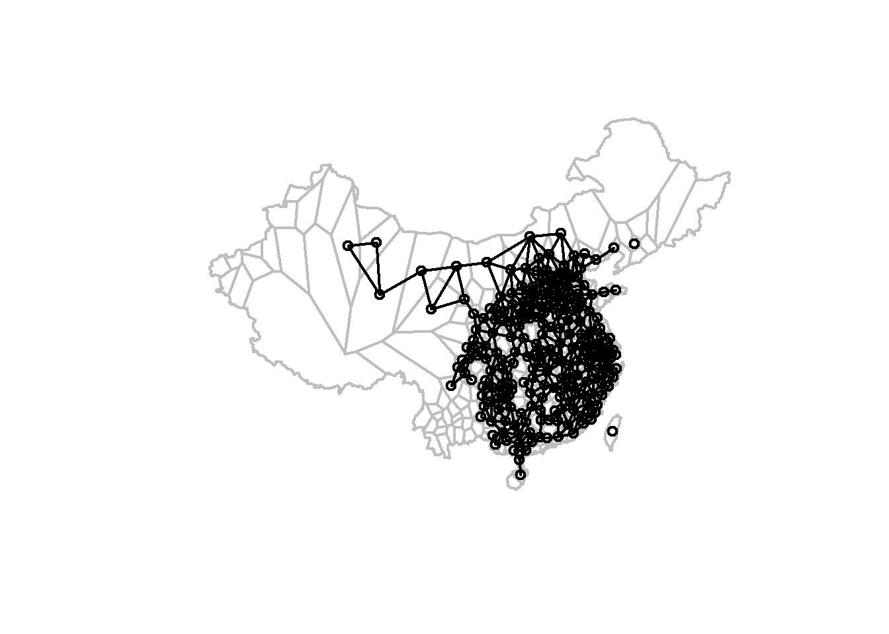

I employ the R statistical package often to perform end-to-end data analysis from cleaning to visualization. In one case, I was approached by the chair of my dissertation committee who, along with a collaborator at a different university, were attempting to leverage a novel data set into a new article. They had already received comments back from reviewers but needed a new approach in order to better understand correlations between grain price time series from 1736 to 1911, limit the correlations to spatial neighbors, and visualize the strongly correlated cities as visual clusters. This article is current under review at Social Science History.
The data in question is a monthly tabulation of high and low grain prices for each city. The initial format did not lend itself to easy time-series analysis as I wanted each city to be the column headers with each row representing a single month’s grain price average.
# 1. Read in data ---------------------------------------------------------
library(readxl)
# set whatever folder is holding the data on your machine
# setwd("~/Grain Price Project")
# create a subdirectory to hold all future outputs if none exists
if (dir.exists(file.path(getwd(), 'output')) == TRUE) {
print("Sub-directory found")
} else {
dir.create(file.path(getwd(), 'output'))
}## [1] "Sub-directory found" # read in excel spreadsheet
price_data <- read_xls("data/allgrain_W1.xls")
#view data
print(head(price_data))## # A tibble: 6 × 33
## grain prov W1_ID 地區 糧別 year mo01_lo mo01_hi mo02_lo mo02_hi mo03_lo
## <chr> <chr> <chr> <chr> <chr> <dbl> <dbl> <dbl> <dbl> <dbl> <dbl>
## 1 wheat ah AH 安徽 小麥、… 1738 NA NA NA NA NA
## 2 wheat ah AH 安徽 小麥、… 1739 79.9 112. 82.2 116. 81.6
## 3 wheat ah AH 安徽 小麥、… 1740 NA NA NA NA NA
## 4 wheat ah AH 安徽 小麥、… 1741 63.5 86.2 64.6 86.3 65.8
## 5 wheat ah AH 安徽 小麥、… 1742 85.7 128. 87.8 131. 91.4
## 6 wheat ah AH 安徽 小麥、… 1743 102. 140. 104. 142. 105.
## # … with 22 more variables: mo03_hi <dbl>, mo04_lo <dbl>, mo04_hi <dbl>,
## # mo05_lo <dbl>, mo05_hi <dbl>, mo06_lo <dbl>, mo06_hi <dbl>, mo07_lo <dbl>,
## # mo07_hi <dbl>, mo08_lo <dbl>, mo08_hi <dbl>, mo09_lo <dbl>, mo09_hi <dbl>,
## # mo10_lo <dbl>, mo10_hi <dbl>, mo11_lo <dbl>, mo11_hi <dbl>, mo12_lo <dbl>,
## # mo12_hi <dbl>, yr_lo <dbl>, yr_hi <dbl>, yr_mean <dbl>Due to the structure of the initial data, and there being only a yearly high, low, and mean, I needed to calculate monthly means and arrange these into vectors so that R could recognize them as legitimate time series per city rather than binned into months. I also filled in the months for each year and a decade column which would help binning and aggregating later.
# 2. Calculate monthly mean prices --------------------------------
library(tidyverse)
# create vector of months
months <- c("Month1","Month2","Month3","Month4","Month5","Month6","Month7","Month8","Month9","Month10","Month11","Month12")
# merge the columns to the full data set then make them of a numeric data type
price_data[months] <- NA
price_data[months] <- sapply(price_data[months], as.numeric)
# split data by prefecture
split <- price_data %>%
group_by(W1_ID) %>%
group_split()
# iterate through each prefecture and calculate monthly means between month_x high and month_x low columns
for (i in 1:length(split)){
k <- 6
for (j in 34:45) {
k <- k + 1
low <- split[[i]][,k]
k <- k + 1
high <- split[[i]][,k]
split[[i]][,j] <- ((low + high) / 2)
}
#print(paste0("Calculating means for ",split[[i]]$W1_ID[1]))
}
# compile results
all_means <- do.call(rbind,split)
#write.csv(all_means,file = "output/02_monthly_means.csv", row.names = FALSE)
# 3. Reshaping price data into monthly time series ------------------------
# stretch year and month labels into long form to make a master list
all_ts <- tibble(year = as.character(rep(min(all_means$year):max(all_means$year),each = 12, length = 2112)),
month = as.character(str_pad(rep(1:12,each = 1, length = 2112),2, side = "left", pad="0")))
# iterate through each prefecture
for (i in unique(all_means$W1_ID)){
#print(paste0("Pivoting ",i))
# filter for prefecture id and select for columns of interest
pre_slice <- all_means %>%
filter(W1_ID == i) %>%
select(c(3,6,34:45))
# stretch month-price matrix into vector time series
prices <- tibble(prices = as.vector(t(pre_slice[,3:length(pre_slice)])))
colnames(prices) <- pre_slice[1,1]
# repeat year and month columns for 12 months per year
rep <- pre_slice[rep(seq_len(nrow(pre_slice)), each = 12), ]
months <- tibble(month = as.character(str_pad(rep(1:12,each = 1, length = nrow(rep)),2, side = "left", pad="0")))
years <- tibble(year = as.character(rep$year))
# bind years, month, and price columns together for one price per year-month combo
prefecture_ts <- bind_cols(years,months,prices)
# append prefecture time series to master list
all_ts <- left_join(all_ts,prefecture_ts)
#print(paste0("Appending time series ",pre_slice[1,1],"..."))
}
# removing first few years since it is a NA-laden half-decade
all_ts_trim <- all_ts %>%
filter(year >= 1740 & year <= 1909)
number_of_decades <- nrow(all_ts_trim) / 120
# fill in decade info
all_ts_decade <- all_ts_trim %>%
mutate(decade = str_pad(rep(1:17,each = 120),2, side = "left","0"),
.after = month)
# write out the time series series
#write.csv(all_ts_decade, file = "output/03_full_time_series.csv", row.names = FALSE)Now the data is in the format I want.
print(tail(all_ts_decade))## # A tibble: 6 × 342
## year month decade AH AH001 AH007 AH013 AH016 AH023 AH025 AH027 AH033 AH036
## <chr> <chr> <chr> <dbl> <dbl> <dbl> <dbl> <dbl> <dbl> <dbl> <dbl> <dbl> <dbl>
## 1 1909 07 17 226. 220 212. 192 202. 255 215 270 214. 242
## 2 1909 08 17 224. 220 198. 192 192. 250 215 270 214. 242
## 3 1909 09 17 224. 220 203 192 192. 250 215 270 214. 242
## 4 1909 10 17 227. 226 208. 192 206. 250 215 270 214. 242
## 5 1909 11 17 228. 230 208. 197 214. 250 215 270 214. 242
## 6 1909 12 17 227. 236 208. 200 214. 250 215 261 198 246.
## # … with 329 more variables: AH041 <dbl>, AH047 <dbl>, AH051 <dbl>,
## # AH054 <dbl>, FJ <dbl>, FJ001 <dbl>, FJ006 <dbl>, FJ016 <dbl>, FJ022 <dbl>,
## # FJ025 <dbl>, FJ032 <dbl>, FJ036 <dbl>, FJ043 <dbl>, FJ051 <dbl>,
## # FJ053 <dbl>, FJ059 <dbl>, FJ062 <dbl>, FT93162 <dbl>, FT93166 <dbl>,
## # FT93167 <dbl>, GD <dbl>, GD001 <dbl>, GD011 <dbl>, GD012 <dbl>,
## # GD013 <dbl>, GD019 <dbl>, GD032 <dbl>, GD042 <dbl>, GD047 <dbl>,
## # GD050 <dbl>, GD052 <dbl>, GD053 <dbl>, GD056 <dbl>, GD059 <dbl>, …With the grain prices now a collection of time series where each city has its own series, I calculated the correlation each was to each other in pair-wise fashion. Although this has been done using a standard Pearson correlation test, that test makes less sense as-is for time series, especially because we were interested in the similarity of the price dynamics rather than absolute values. This is important because market regions have suppliers and consumers, where supply-heavy areas have lower prices and consumer-heavy areas have high prices but each should affect the other.
# 2. Calculating correlation matrix ---------------------------------------
# Unnecessary if you already have the correlation data to load in!
all_tests <- tibble() # Creates an empty set to collect info on all pairwise correlations
# Calculate pearson and cross correlations for each pairwise match of time series
for (i in 1:length(data_filter)) {
print(paste0(i,"/",length(data_filter)))
col1 <- data_filter[[i]]
col1_name <- colnames(data_filter[i])
auto_exclude <- data_filter %>% select(-i)
for (j in 1:length(auto_exclude)){
print(paste0(j,"/",length(auto_exclude)))
col2 <- auto_exclude[[j]]
col2_name <- colnames(auto_exclude[j])
no_na <- tibble(x = col1, y = col2) %>%
drop_na()
if (nrow(no_na) < 10) {
next
}
ptest <- cor.test(no_na$x, no_na$y, method = "pearson", na.action = "na.omit")
model <- summary(lm(no_na$y ~ no_na$x))
ts1 <- ts(no_na$x)
ts2 <- ts(no_na$y)
diff1 <- diff(ts1)
diff2 <- diff(ts2)
ccf <- ccf(diff1, diff2, ylab = "Cross-correlation", plot = FALSE)
ccf2 <- tibble(lag = ccf$lag, acf = ccf$acf) %>%
filter(lag > -2 & lag < 2)
cc_p_val <- 2 * (1 - pnorm(abs(ccf2$acf[2]), mean = 0, sd = 1/sqrt(ccf$n.used)))
test_info <- tibble(x = col1_name,
y = col2_name,
t_stat_p = ptest[[1]],
df_p = ptest[[2]],
p_p = ptest[[3]],
r_p = ptest[[4]],
adj_r2 = model$adj.r.squared,
alt_p = ptest[[6]],
cc_before = ccf2$acf[1],
cc_same = ccf2$acf[2],
cc_after = ccf2$acf[3],
cc_p = cc_p_val)
all_tests <- bind_rows(all_tests, test_info)
}
}
all_tests$diff <- abs(all_tests$r_p - all_tests$cc_same)
# write.csv(all_tests, "output/all_tests_before_1842.csv", row.names = FALSE)
# transform correlation results into a matrix (to be multiplied to weight matrix later)
tests_wider <- pivot_wider(all_tests %>% select(x,y,cc_same), names_from = y, values_from = cc_same)
rownames <- tests_wider$x
tests_wider <- tests_wider %>%
select(-1)
tests_mat <- as.matrix(tests_wider)
rownames(tests_mat) <- rownamesI then filtered the data spatially so that only adjacent cities (as determined by their Thiessen polygon envelopes) would be considered rather than all 40,000+ correlations.
library(spdep)
library(tmap)
# 3. Analysis parameters --------------------------------------------------
# set the cutoff for cluster size (anything smaller than X)
min_cluster_size <- 5
# set the cut-off level for correlation coefficients (higher means stricter filter)
sig_level <- 0
# 4. Generating spatial weights matrix and filtering final data -----------
print("Generating spatial weights matrix...")## [1] "Generating spatial weights matrix..." # convert shapefile back to sp and generate spatial adjacency matrix
shp_trim_sp <- as(shp_trim, "Spatial")
queen <- poly2nb(shp_trim_sp, queen = TRUE)
xy <- coordinates(shp_trim_sp)
plot(thiessen_sp, col='white', border='grey', lwd=2)
plot(queen, xy, col='black', lwd=2, add = TRUE)
cardinality <- card(queen)
hist(cardinality, main = paste0("Histogram of Neighbor Linkages\nMean = ",round(mean(cardinality), 2)), xlab = "Number of Neighbors") wm <- nb2mat(queen, style='B', zero.policy = TRUE)
colnames(wm) <- colnames(data_filter)
rownames(wm) <- colnames(data_filter)
# arrange matrix of correlation data into long format
tests_longer <- melt(tests_mat)
tests_longer$Var1 <- as.character(tests_longer$Var1)
tests_longer$Var2 <- as.character(tests_longer$Var2)
tests_longer <- tests_longer %>% arrange(Var1, Var2)
# Plot histogram of all correlation coefficients
hist(tests_longer$value, main = "Histogram of all Cross-correlation Coefficients\nn = 43264", xlim = c(-1,1), xlab = "Coefficient") # arrange weight matrix into long format
wm_longer <- melt(wm)
wm_longer$Var1 <- as.character(wm_longer$Var1)
wm_longer$Var2 <- as.character(wm_longer$Var2)
wm_longer <- wm_longer %>% arrange(Var1, Var2)
colnames(wm_longer) <- c("x","y","adj")
# Connecting isolates to nearest neighbor
# Taiwan
wm_longer$adj[wm_longer$x == "FJ036" & wm_longer$y == "FJ025"] <- 1
# Manchuria
wm_longer$adj[wm_longer$x == "SJ019" & wm_longer$y == "SJ001"] <- 1
print("Applying weight matrix and other filters...")## [1] "Applying weight matrix and other filters..." # filter out only positive correlations and those over the chosen threshold (networks don't like negative ones)
combine <- all_tests %>%
left_join(wm_longer)
combine_neighbors <- combine %>%
filter(adj > 0)
combine_significant <- combine_neighbors %>%
filter(cc_p < 0.05)
combine_positive <- combine_significant %>%
filter(cc_same > 0)
# grab a significance level based on quantiles
# sig_level <- quantile(positive_coef$coef, na.rm = TRUE)[[1]] # set the cutoff for correlation coefficient filter (anything smaller or equal to 4th quintile)
only_sig <- combine_positive %>%
filter(cc_same >= sig_level)
no_duplicates <- only_sig %>%
mutate(normalized = map2_chr(x, y, ~paste(sort(c(.x, .y)), collapse = ""))) %>%
group_by(normalized) %>%
summarise(x = first(x),
y = first(y)) %>%
select(-normalized) %>%
left_join(all_tests)
hist(no_duplicates$cc_same, xlab = "Coefficent", main = "Histogram of Corr. Coefficients for Pre-1842") write.csv(no_duplicates, "output/05_network_edges.csv", row.names = FALSE)Finally, once the data was properly formatted, filtered, and spatialized, I could then create a network of correlations between cities based on their grain price time series and use the Louvain community detection algorithm to find which spatial neighbors were most alike as a group.
library(igraph)
library(tmap)
# 5. Creating network graph and detecting communities ---------------------
print("Generating network graph and detecting communities...")## [1] "Generating network graph and detecting communities..." # drawing paths between nodes and creating undirected graph object
initial_graph <- graph_from_data_frame(no_duplicates,
directed = FALSE)
weighted_graph <- set_edge_attr(initial_graph,
"weight",
value = no_duplicates$cc_same)
# applying Louvin community detection algorithm to find clusters in the graph
community <- cluster_louvain(weighted_graph,
weights = E(weighted_graph)$weight)
algorithm <- algorithm(community)
modularity <- round(modularity(community),2)
transitivity <- transitivity(weighted_graph,
type = "global",
weights = E(weighted_graph)$weight)
cluster_id <- tibble(
W1_ID = community$names,
cluster = as.factor(community$membership)
)
# trim clusters that are too small
only_big <- cluster_id %>%
group_by(cluster) %>%
filter(n() >= min_cluster_size)
# join graph data to shapefile
cluster_spatial <- thiessen_sf %>%
right_join(only_big)
# reproject shapefile to Asia North Albers Equal Area Conic
cp_t <- st_transform(cluster_spatial, "ESRI:102025")
# intersecting Skinner's physiographic macroregion names with clustered prefectures
pmr_transform <- st_transform(physiographic_macroregions,
crs = "ESRI:102025")
union <- st_intersection(cp_t, pmr_transform)
cluster_union <- cluster_spatial %>%
left_join(st_drop_geometry(union), by = c("W1_ID","cluster"))
# rename clusters based on their pmr locations
rename <- st_drop_geometry(cluster_union) %>%
group_by(cluster) %>%
count(SYS_NAME) %>%
top_n(1) %>%
arrange(SYS_NAME)
print("Naming split clusters")## [1] "Naming split clusters" rename$name_dup <- duplicated(rename$SYS_NAME)
rename$clust_dup <- duplicated(rename$cluster)
rename$na <- rowSums(is.na(rename))
dup_counter <- 1
for (i in 1:nrow(rename)){
if (rename$na[i] == 1){
rename$SYS_NAME[i] <- "Xinjiang*"
}
if (rename$name_dup[i] == TRUE){
dup_counter <- dup_counter + 1
rename$SYS_NAME[i] <- paste0(rename$SYS_NAME[i],"_",dup_counter)
} else {
dup_counter <- 1
}
print(rename$SYS_NAME[i])
}## [1] "Gan Basin"
## [1] "Lingnan"
## [1] "Lower Yangzi"
## [1] "Lower Yangzi_2"
## [1] "Middle Yangzi proper"
## [1] "Min Basin"
## [1] "North China"
## [1] "North China_2"
## [1] "North China_3"
## [1] "Upper Yangzi"
## [1] "Wei-Fen Basins"
## [1] "Yungui" rename_drop_tie <- rename %>%
filter(clust_dup == FALSE)
# join final results to shapefile and convert cluster info to factors
clusters_complete <- cluster_spatial %>%
left_join(rename_drop_tie) %>%
drop_na()
clusters_complete$Market_Name <- as.factor(clusters_complete$SYS_NAME)
clusters_complete$cluster <- as.factor(as.numeric(clusters_complete$SYS_NAME))
print("Plotting clusters...")## [1] "Plotting clusters..." # plot prefectures with cluster membership
tm_shape(thiessen_sf)+
tm_borders() +
tm_shape(clusters_complete) +
tm_polygons(col = "Market_Name", border.col = "white") +
tm_layout(title = "Louvain Communities Pre-1842",
legend.bg.color = "white",
legend.frame = "black",
legend.outside = TRUE)This research was even more interesting because I was helping to test an empirical approach to one that was also empirical but also black-boxed by its author William Skinner whose way of splitting up historical China by physical geography has been a mainstay for decades. In this way, this workflow allows anyone with access to the data to create new approaches to determining market regions using programming rather than years of meticulous calculations by hand like Skinner performed. Now if I plot Skinner’s regions as outlines over mine, they are similar in some ways but different in many places! This was the main finding of the study.
# plot prefectures with cluster membership
tm_shape(thiessen_sf)+
tm_borders() +
tm_shape(clusters_complete) +
tm_polygons(col = "Market_Name", border.col = "white") +
tm_shape(physiographic_macroregions) +
tm_borders(lwd = 2, col = "black") +
tm_layout(title = "Louvain Communities Pre-1842",
legend.bg.color = "white",
legend.frame = "black",
legend.outside = TRUE)